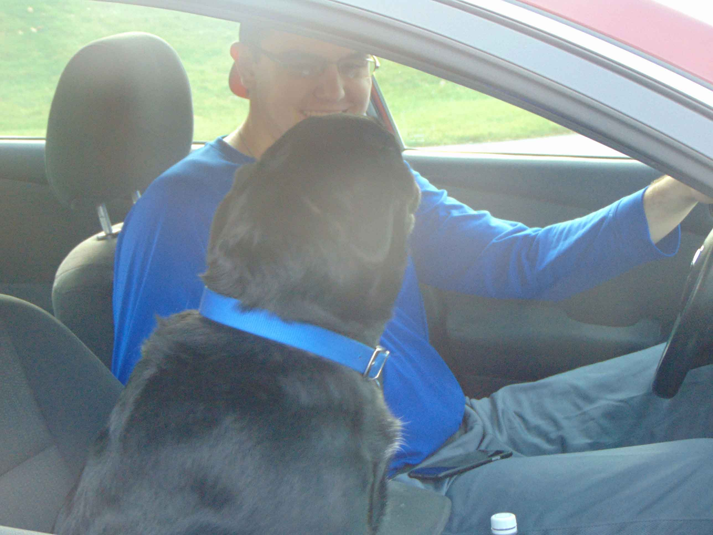
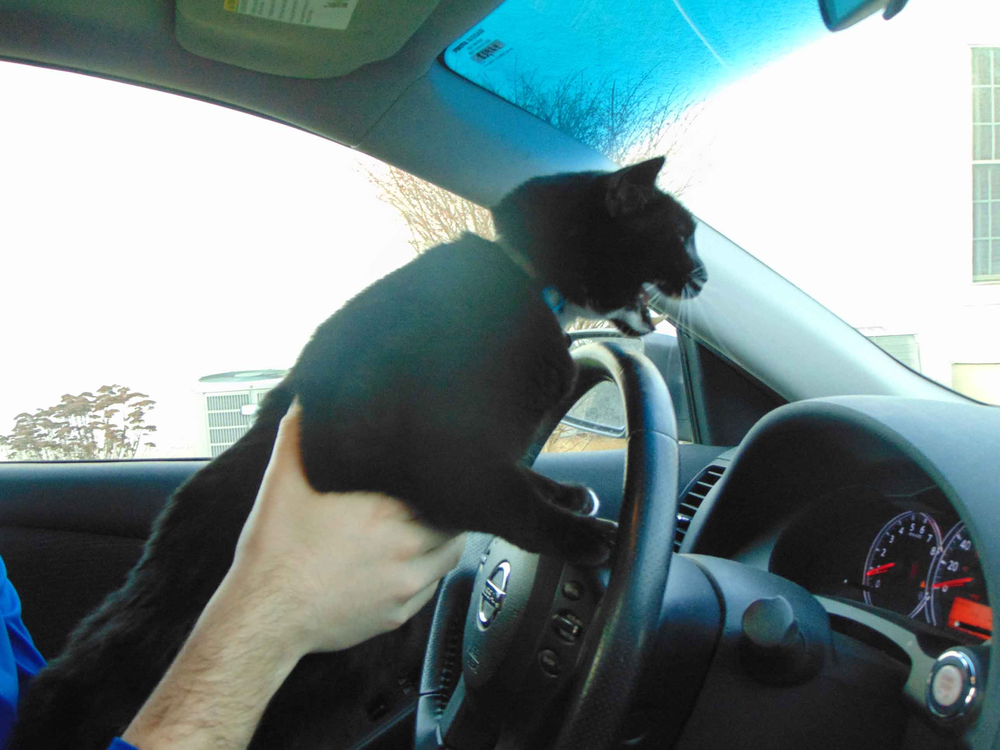
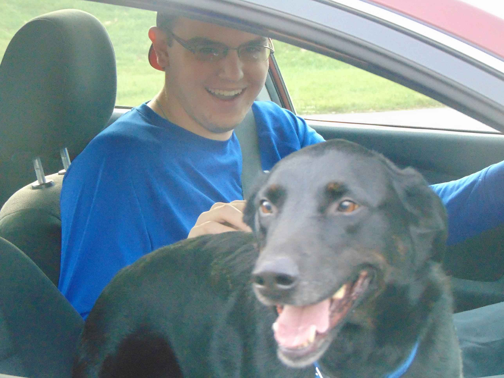

Pets in the Car
Pets can be more dangerous than you might know.

Having pets in the car might seem harmless, but it can be extremely dangerous. Depending on the pet, it can depend on the harm being caused. On a recent AAA pet product survey, about 29% of the people responding admitted to being distracted by their pets when they were in the car. 80% of the respondents said they brought their pets in their car while driving. Only 17% of the respondents said they used a restraint to keep their pet from distracting them. Which can show that pets can be very distracting while in cars.

Many people in the survey said that they did not always have their pets contained or buckled in, so many respondents pet their pets and even play with them. This can cause the driver to become distracted from their driving, becoming very dangerous while the driver takes their eyes off the road. The most common pets-dogs and cats, can even get carsick and make a mess while you're trying to drive. If not in restrain, the pet can move around freely, and make a mess, so it's important to keep the pet controlled, to prevent the driver being distracted.

While having a dog sit in the passenger seat and possibly even sticking their head out the window might seem simple and manageable, it can greatly distract the attention of the driver, making it dangerous. It is extremely important to restrain your pet and keep them from running around in the car and causing a distraction to the driver. Drivers need to keep their eye on the road to prevent crashes that are fatal and so the passengers in the car and the driver can reach their destination.

Some of the respondents said that they didn't use restraint because their pet was usually calm in the car, but even if the pet is calm it can still be dangerous. It could still throw up in the back seat or be alarmed, making it dangerous. Even if a pet is sleeping, with or without restraint, it could be a deadly distraction, or just deadly for the pet itself. If an emergency stop came into place, the pet could be injured by either falling off the seat or the seatbelt harming them. This can show that no matter how calm or big the pet is, it can be a distraction to the driver, making it deadly to other drivers. AAA recommends that you use restraint systems and to not interact with your pet while driving on the road, to stay safe, and prevent crashes from happening.